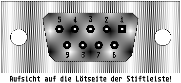

Previous
Next
TOC
Die Pinbelegung des Maus/Joysticksteckers
1 Hoch / YB
2 Runter / XA
3 Links / YA
4 Rechts / YB
5 Not Connected
6 Feuer / Linke Maustaste
7 +5V DC
8 Ground
9 Joystick 1 Feuer / Rechte Maustaste
Wer eine Amiga Maus am Atari betreiben will, mufl die Pins 1 und 4 in
der Anschluflbuchse der Amiga Maus umstecken!

Kapitel Die Pinbelegung des Maus/Joysticksteckers, Seite 1